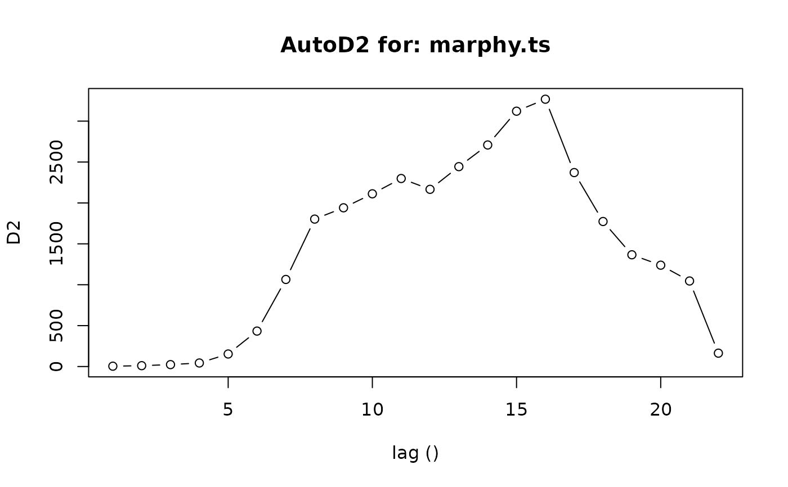
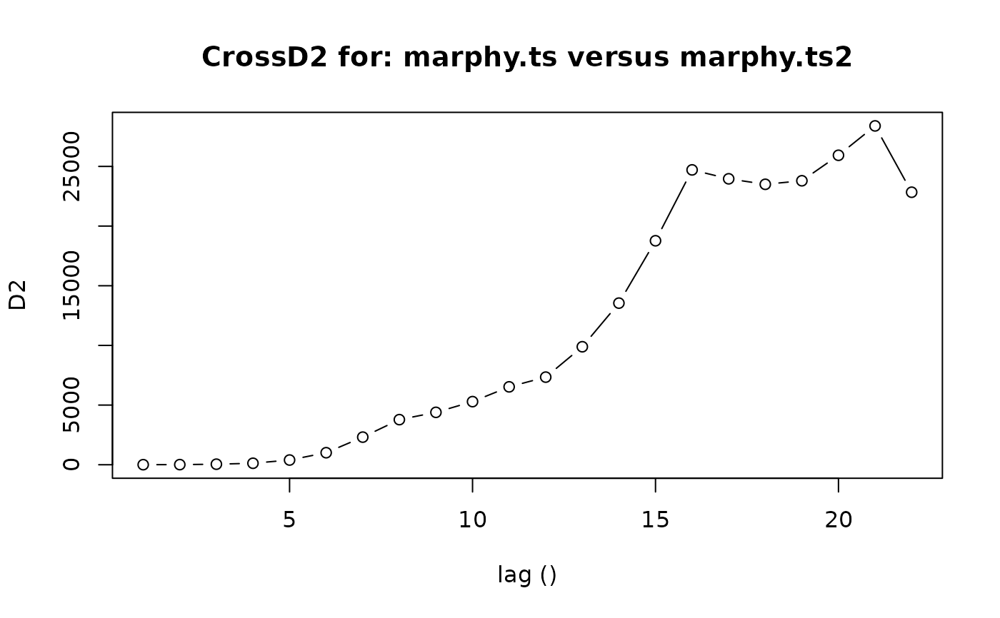
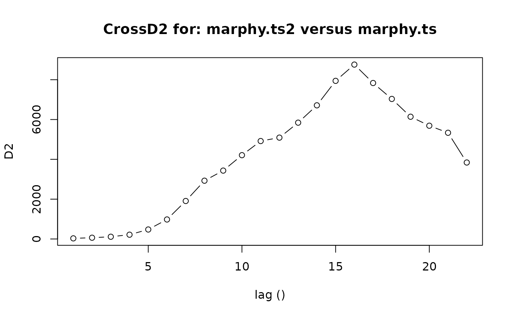
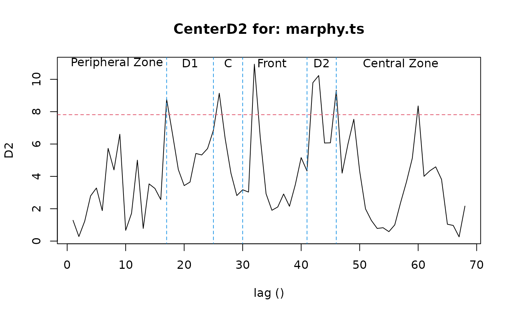

AutoD2, CrossD2 or CenterD2 analysis of a multiple time-series
AutoD2.RdCompute and plot multiple autocorrelation using Mahalanobis generalized distance D2. AutoD2 uses the same multiple time-series. CrossD2 compares two sets of multiple time-series having same size (same number of descriptors). CenterD2 compares subsamples issued from a single multivariate time-series, aiming to detect discontinuities.
Arguments
- series
regularized multiple time-series
- series2
a second set of regularized multiple time-series
- lags
minimal and maximal lag to use. By default, 1 and a third of the number of observations in the series respectively
- step
step between successive lags. By default, 1
- window
the window to use for CenterD2. By default, a fifth of the total number of observations in the series
- plotit
if
TRUEthen also plot the graph- add
if
TRUEthen the graph is added to the current figure- type
The type of line to draw in the CenterD2 graph. By default, a line without points
- level
The significance level to consider in the CenterD2 analysis. By default 5%
- lhorz
Do we have to plot also the horizontal line representing the significance level on the graph?
- lcol
The color of the significance level line. By default, color 2 is used
- llty
The style for the significance level line. By default:
llty=2, a dashed line is drawn- ...
additional graph parameters
Value
An object of class 'D2' which contains:
- lag
The vector of lags
- D2
The D2 value for this lag
- call
The command invoked when this function was called
- data
The series used
- type
The type of 'D2' analysis: 'AutoD2', 'CrossD2' or 'CenterD2'
- window
The size of the window used in the CenterD2 analysis
- level
The significance level for CenterD2
- chisq
The chi-square value corresponding to the significance level in the CenterD2 analysis
- units.text
Time units of the series, nicely formatted for graphs
References
Cooley, W.W. & P.R. Lohnes, 1962. Multivariate procedures for the behavioral sciences. Whiley & sons.
Dagnélie, P., 1975. Analyse statistique ? plusieurs variables. Presses Agronomiques de Gembloux.
Ibanez, F., 1975. Contribution à l'analyse mathématique des évènements en écologie planctonique: optimisations méthodologiques; étude expérimentale en continu à petite échelle du plancton côtier. Thèse d'état, Paris VI.
Ibanez, F., 1976. Contribution à l'analyse mathématique des évènements en écologie planctonique. Optimisations méthodologiques. Bull. Inst. Océanogr. Monaco, 72:1-96.
Ibanez, F., 1981. Immediate detection of heterogeneities in continuous multivariate oceanographic recordings. Application to time series analysis of changes in the bay of Villefranche sur mer. Limnol. Oceanogr., 26:336-349.
Ibanez, F., 1991. Treatment of the data deriving from the COST 647 project on coastal benthic ecology: The within-site analysis. In: B. Keegan (ed), Space and time series data analysis in coastal benthic ecology, p 5-43.
WARNING
If data are too heterogeneous, results could be biased (a singularity matrix appears in the calculations).
See also
Examples
data(marphy)
marphy.ts <- as.ts(as.matrix(marphy[, 1:3]))
AutoD2(marphy.ts)

#> $lag
#> [1] 1 2 3 4 5 6 7 8 9 10 11 12 13 14 15 16 17 18 19 20 21 22
#>
#> $D2
#> [1] 4.22573 10.58976 23.47267 43.38305 153.44283 433.54182
#> [7] 1064.54132 1802.43083 1940.63240 2111.62737 2298.56609 2166.24216
#> [13] 2443.59445 2708.61304 3121.54365 3267.95116 2370.99649 1772.94559
#> [19] 1366.08938 1239.05153 1045.82545 163.43575
#>
#> $call
#> AutoD2(series = marphy.ts)
#>
#> $data
#> [1] "marphy.ts"
#>
#> $type
#> [1] "AutoD2"
#>
#> $units.text
#> [1] ""
#>
#> attr(,"class")
#> [1] "D2"
marphy.ts2 <- as.ts(as.matrix(marphy[, c(1, 4, 3)]))
CrossD2(marphy.ts, marphy.ts2)

#> $lag
#> [1] 1 2 3 4 5 6 7 8 9 10 11 12 13 14 15 16 17 18 19 20 21 22
#>
#> $D2
#> [1] 4.323043 10.155231 45.764444 124.524831 395.341890
#> [6] 1008.216533 2314.110604 3780.247450 4391.117099 5289.482066
#> [11] 6527.234759 7341.803004 9887.267753 13544.128938 18768.866938
#> [16] 24708.252337 23961.156382 23500.686505 23796.894859 25932.921344
#> [21] 28394.452862 22836.606581
#>
#> $call
#> CrossD2(series = marphy.ts, series2 = marphy.ts2)
#>
#> $data
#> [1] "marphy.ts"
#>
#> $data2
#> [1] "marphy.ts2"
#>
#> $type
#> [1] "CrossD2"
#>
#> $units.text
#> [1] ""
#>
#> attr(,"class")
#> [1] "D2"
# This is not identical to:
CrossD2(marphy.ts2, marphy.ts)

#> $lag
#> [1] 1 2 3 4 5 6 7 8 9 10 11 12 13 14 15 16 17 18 19 20 21 22
#>
#> $D2
#> [1] 30.76921 62.83820 112.50639 215.13122 475.90799 979.41968
#> [7] 1907.94064 2927.17901 3434.67167 4209.00250 4918.96322 5091.38349
#> [13] 5842.69358 6713.53204 7942.49390 8759.94122 7834.21656 7034.27185
#> [19] 6140.98599 5689.15330 5334.47184 3841.11059
#>
#> $call
#> CrossD2(series = marphy.ts2, series2 = marphy.ts)
#>
#> $data
#> [1] "marphy.ts2"
#>
#> $data2
#> [1] "marphy.ts"
#>
#> $type
#> [1] "CrossD2"
#>
#> $units.text
#> [1] ""
#>
#> attr(,"class")
#> [1] "D2"
marphy.d2 <- CenterD2(marphy.ts, window=16)
lines(c(17, 17), c(-1, 15), col=4, lty=2)
lines(c(25, 25), c(-1, 15), col=4, lty=2)
lines(c(30, 30), c(-1, 15), col=4, lty=2)
lines(c(41, 41), c(-1, 15), col=4, lty=2)
lines(c(46, 46), c(-1, 15), col=4, lty=2)
text(c(8.5, 21, 27.5, 35, 43.5, 57), 11, labels=c("Peripheral Zone", "D1",
"C", "Front", "D2", "Central Zone")) # Labels

time(marphy.ts)[marphy.d2$D2 > marphy.d2$chisq]
#> [1] 17 26 32 42 43 46 60